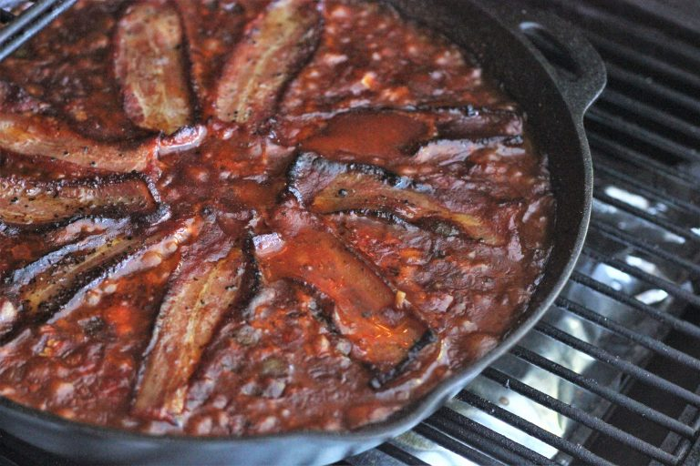

Smoked Baked Beans

A delicious twist on a barbeque classic.
Smoked baked beans are a fantastic addition to any barbeque. Even without smoking this dish, they are rich and delicious, but smoking just takes the beans to a new level.
Ingredients:
- 6-8 slices thick-cut peppered bacon
- 1 medium yellow onion, diced
- 1-3 jalepenos (depending on desired level of heat), de-sedded and diced
- 1 large green bell pepper, diced
- 1 55 ounce can Bush's Original baked beans
- 3/4 cup of preferred barbeque sauce
- 1/2 cup dark brown sugar
- 1/4 cup apple cider vinegar
- 2 tablespoons dijon mustard
- 2 tablespoons molasses
Directions:
- Preheat smoker to 250° F using a mild wood.
- Preheat a large oven-safe skillet or pot over medium-high heat. Cook the bacon enough to render some of the fat, but not enough to make it crispy.
- Remove the bacon to a paper towel lined plate to drain excess grease. With the bacon grease still in the pan, add the onion and peppers. Cook until softened, fragrant, and onions are slightly transluscent.
- Pour in the beans, including the liquid from the can. Add the barbeque sauce, brown sugar, apple cider vinegar, dijon mustard, and molasses. Stir to combine.
- Depending on your preference, you can allow the beans to simmer on the stove to reduce and thicken slightly. Otherwise, proceed to the next step.
- Place bacon slices atop the beans, and place skillet or pot on the smoker.
- Smoke uncovered for approximately 3 hours, or until most of the remaining fat has rendered from the bacon strips.
- Remove from smoker and serve warm.
Notes:
Without reducing the beans in step 4, the sauce will be loose. The beans will reduce slightly while in the smoker, but adjust simmer time on the stove to your liking.
The brown sugar and molasses means these beans are on the sweeter side. Feel free to adjust to your liking.
The barbeque sauce used can be your favorite store-bought sauce, or a favorite homemade sauce. I often use Sweet Baby Ray's Original barbeque sauce.
If preferred, you can chop the bacon into smaller pieces. This may help render the fat, and will be easier to mix into the beans when done cooking.